Tarot. Droga Maga.
Mit Zachodu

Tarot. Droga Maga.
Mit Zachodu
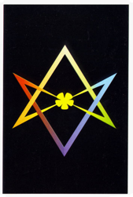
Spotkanie odbyło się w ramach cyklu wykładów Andrzeja Urbanowicza w GCK w Katowicach. Tekstowi towarzyszyła prezentacja kart tarota z kolekcji Jana Przyłuskiego.

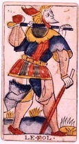
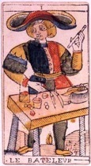
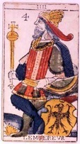
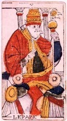
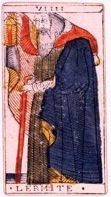
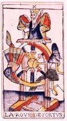
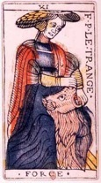
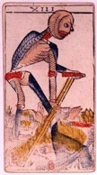
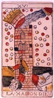
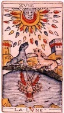
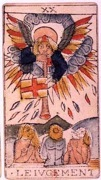
Najsłynniejszy tarot w dziejach.
Wielkie Arkana Jaques’a Dodala. Tarot Marsylski. Wersja IV.
“Poczucie spełnienia zastąpiło rozpacz i zwątpienie, każdy fragment wszechświata promieniuje pięknem. Głupiec nie zwraca uwagi na przepaść pod stopami, ponieważ wie, że jest nieśmiertelną wiązką świadomości. Jak czarownicy z książek Castanedy. Nie zwraca uwagi na namolnego psa, oznaczającego nieaktualne programy, już do niczego nie zdatne. Tarot proponuje taką duchową wędrówkę poprzez różne obszary, różne możliwości, przez całe bogate spektrum ludzkiego życia. Jak do tego doszło, że powstała taka maszyna? Tego właśnie nie wiemy”. Andrzej Urbanowicz